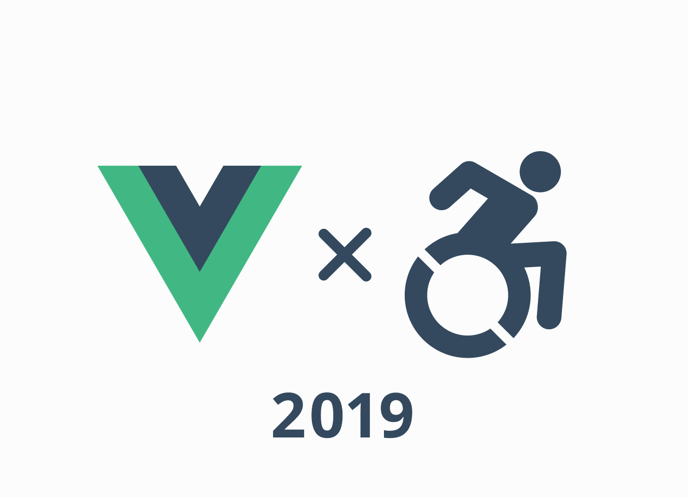
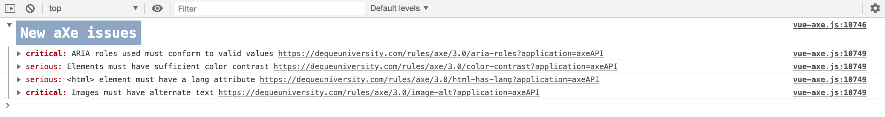

About accessibility with Vue.js - 2019

This article is Day 21 of the Web Accessibility Advent Calendar 2019.
This is about web accessibility support in Vue.js development. (Japanese Version)
This article has been published for more than a year. Some parts of the content are outdated.
Profile

My name is Okuto Oyama. On the Internet, I am active under the names of Oyama Michinoku and yamanoku.
I started out as a web designer for a web production company and worked as a markup/front-end engineer at GEEK Inc. before joining CrowdWorks Inc. in October 2019.
My role is as a UX engineer. Individuals are also involved in accessibility advocate.
Books
Web accessibility for beginners
I published a technical coterie magazine called “Web Accessibility for Beginners” at a 技術書典 (technical book festival), which I wanted to introduce as an introduction to web accessibility for those who are new to it.
It is now selling in PDF file at BOOTH and Note.
We also accept corrections, improvements, and suggestions in our feedback repository, Issue, on GitHub.
yamanoku/accessibility_book-issues:「これからはじめる web アクセシビリティ」への FB 専用リポジトリ
What is accessibility?
Definition of accessibility
First, Accessibility is defined as “admitting approach/receptiveness”; web accessibility refers to making information and content on the web accessible to all people.
Making it accessible to all people means making it easy to browse for people who are unfamiliar with the device, avoiding difficult phrases and making it easy to understand, adjusting the contrast to make it easier to browse, and taking into account the use of assistive technologies such as screen readers that can read aloud.
There are over one billion people with disabilities or about 15-20% of the population. The UN Convention on the Rights of Persons with Disabilities defines that access to information, including the Web, as a human right. Most countries around the world have ratified this UN convention, and several have adopted binding policies too. Yet regardless of any laws and regulations, implementing the accessibility standards is essential for people with disabilities, and useful for all.
Video Introduction to Web Accessibility and W3C Standards | Web Accessibility Initiative (WAI) | W3C
Does accessibility support mean accommodating people with disabilities?
It's a common misconception that being accessible is perceived as being disabled-friendly.
Indeed, accessibility support is also intended to enable people with disabilities to use it, but the real purpose is to “make available to everyone” so I think that the only thing that stands out is how to deal with disabled people, which leads to misunderstanding.
Google I/O now has a live captioning feature for real-time captioning in voice recognition. Whether it's for the hearing impaired, watching videos on mute, or transcribing sentences to help you understand what's going on, we've created something that anyone can use in any situation.

Screen readers are not only for the visually impaired, but also to help people who have difficulty reading long sentences, such as dyslexia, and to make it easier to notice mistakes by having them read aloud rather than just visually checking sentences.
Addressing accessibility for everyone to participate
Accessibility is often confused with “usability”, which emphasizes ease of use, but its purpose is to consider whether or not it can be used before it is easy to use. And being able to use it also means being able to participate.
Other countries have laws to ensure accessibility, but this is because they consider accessibility itself to be a human right rather than a means to do so.
Vue.js & Web accessibility
Now that you know something about accessibility, I'd like to talk about the main topic of Vue.js and web accessibility.
There is no documentation of accessibility
I believe that one of the factors that made Vue.js so popular in Japan was the fact that the official documentation was translated into Japanese. For me, the Japanese translation of the documents made it very easy to work on them.
By the way, do you know how much accessibility is mentioned in the official Vue.js documentation?
In fact, no documentation mentions accessibility, only a slight mention of it in some of the documentation.
As we develop our
<blog-post>component, some features may require communicating back up to the parent. For example, we may decide to include an accessibility feature to enlarge the text of blog posts, while leaving the rest of the page its default size:Components Basics — Listening-to-Child-Components-Events — Vue.js
You can use this base icon as is- the only thing you might need to update is the viewBox depending on the viewBox of your icons. In the base, we’re making the width, height, iconColor, and name of the icon props so that it can be dynamically updated with props. The name will be used for both the
<title>content and its id for accessibility.
React and Angular has an accessibility section in their official documentation that summarizes points to keep in mind when developing them.
I feel it's okay to have an accessibility item, as well as React and Angular. When I looked into the Vue.js Issue, Callum Macra seems to have been working on the document, but the Pull Request has not made any progress.
Accessibility docs · Issue #974 · vuejs/vuejs.org
It's still a work in progress, but the document, which is currently being edited, is very well put together for understanding web accessibility. I hope you'll take a look at it.
vuejs.org/accessibility.md at a11y-docs · callumacrae/vuejs.org
Vue a11y
Accessibility article in the official documentation have yet to be created, but instead an accessibility community for Vue.js has been created.
The community worked on some accessibility libraries for Vue.js, and I'm hoping to contribute in some way.
Points to note about the implementation in Vue.js
Next, we'll discuss what you should keep in mind when implementing Vue.js when considering web accessibility.
Don't implement anything in div
The basic idea is to try to implement semantics to create web accessibility. This isn't that the div tag (or the span tag) is bad in and of itself, it's that you should use tags as needed outside of the look of that component.
For all user interface components (including but not limited to: form elements, links, and components generated by scripts), the name and role can be programmatically determined; states, properties, and values that can be set by the user can be programmatically set;
Understanding Success Criterion 4.1.2 | Understanding WCAG 2.0
For example, if you implement a button from the div tag, you need to consider a lot of things.
<template>
<div role="button" tabindex="0" @click="handleClick" @keyup="handleKeyUp">
button
</div>
</template>
If you semantically implement this, you only need one button tag. The lack of semantics can diminish the inherent functionality of the system.
<template>
<button type="button">button</button>
</template>
Make it possible to operate with a keyboard
People who use screen readers use the keyboard to access information. So you need to be aware that you can access all the information on the keyboard.
Even if you don't use a screen reader, if you are used to using a computer, you may press the Enter key when submitting a form, press the ESC key when closing a dialog, or use the keyboard instead of the mouse.
Along with the consideration of keyboard operations, you should also be aware of the outlines for focus. This is because removing the outline would make it difficult to grasp the current position.
vue-accessible-modal - CodeSandbox
Development of SPA
In modern front-end development, we're seeing more and more implementations of SPA, which treats itself as dynamic content using a single HTML and JavaScript, so it's sometimes impossible to tell what and how things have changed in the page.
Page changes and status updates require an implementation using the aria-live attribute. However, since you need to understand how to handle attribute values, you may want to consume the vue-announcer library to start with, which allows you to easily set up the reading of page moves in a router or state changes in a component.
Nuxt.js の設定
It may be a blind spot, but the language setting is required for htmlAttrs in nuxt.config.js.
module.exports = {
head: {
htmlAttrs: {
lang: "ja",
},
},
};
If nothing is set, the language specification is en, i.e. English. If this is the case, even if the appearance of the application or site is Japanese, it will be an “English” application or the site in the browser's judgment.
If not set, some screen readers will not read the non-English parts. (This was confirmed with Android's Talkback feature). Even if you're not internationalized, you have to be careful about your language settings.
Test & Check
vue-axe
There is a library called axe-core developed by a company called deque systems that does accessibility checks. This is what is also used in Chrome's Lighthouse accessibility item check.

This can be embedded to allow accessibility checks to be run on the console. The following are the settings.
# NPM
$ npm install -D axe-core vue-axe
# Yarn
$ yarn add -D axe-core vue-axe
import Vue from "vue";
if (process.env.NODE_ENV !== "production") {
// development environment
const VueAxe = require("vue-axe").default;
const AXE_LOCALE_JA = require("axe-core/locales/ja.json"); // locale setting
Vue.use(VueAxe, {
config: {
locale: AXE_LOCALE_JA,
},
clearConsoleOnUpdate: false, // Clears the console each time vue-axe runs
});
}
Storybook
Some of you may be using it in your own component library or design system. It can't be checked by itself, but there is an add-on storybook-addon-a11y that allows you to pass accessibility checks on components and stories.

eslint-plugin-vuejs-accessibility
You can also embed it in CI/CD to find errors at build time. eslint is used as a static validation tool for JavaScript, and some plugins can check accessibility.
Examples of checks include whether the alt attribute of img has a value, whether the form element has a label (label), and whether the emoji can be implemented in an accessible way.
<!-- Fail -->
<span>🐼</span>
<!-- Good -->
<span role="img" aria-label="Panda">🐼</span>
However, Lint checks the code conventions, so don't rely only on error detection.
User test
We've talked about mechanical testing, but studies have shown that automated checks and tests can only confirm 30% of all accessibility issues.
Therefore, it also needs to be checked through user tests. We'll be doing some hands-on look and feel, such as browser checks, screen reader tests, and keyboard tests to make sure things are okay.
The WCAG can be used as a reference to determine what kind of testing should be done. These are the guidelines for making web content accessible, published as W3C recommendations, and provide a technology-independent way to verify how to make it accessible.
Web Content Accessibility Guidelines (WCAG) 2.1
However, it is also difficult to refer to the WCAG specification every time, so it would be good to be able to create your own guidelines after referring to the necessary elements.
Conclusion
On March 12, 1989, Tim Berners-Lee of the European Organization for Nuclear Research (CERN) wrote “Information Management: A Proposal” to describe a more advanced information management system. This led to the invention of the WWW (World Wide Web).

The power of the Web is in its universality. Access by everyone regardless of disability is an essential aspect.
Press Release: W3C Launches International Program Office for WAI
Tim Berners-Lee writes, “The power of the Web is in its universality. Access by everyone regardless of disability is an essential aspect.” he preached.
Whatever the device you use for getting your information out, it should be the same information.
And “Whatever the device you use for getting your information out, it should be the same information.” He also answered in an interview. This is exactly how the Web is the solution to accessibility.
As proof, if you're reading this article, you can access this information anywhere, anytime if you can use the Internet. You may want to realize that you can do accessible things just by working with the Web.
And now, 30 years later,the number of Internet users in the world's population has crossed the 50% halfway mark !
As this number grows, the disparity of inaccessibility to the Internet will become greater and greater.
The fight for the web is one of the most important causes of our time. Today, half of the world is online. It is more urgent than ever to ensure the other half are not left behind offline, and that everyone contributes to a web that drives equality, opportunity, and creativity.
（Omission）
The web is for everyone and collectively we hold the power to change it. It won’t be easy. But if we dream a little and work a lot, we can get the web we want.
Leverage the web and work on accessibility through Vue.js
It's not that you can't come up with something accessible without a specific framework. However, I feel that Vue.js is a friendly and open-door JavaScript framework.
Making things accessible is not a matter of “done for,” or “0 or 100,” but rather a matter of continuous review and trial-and-error while creating a product, so We hope to proceed slowly and steadily.
“Start Small, Start Now（小さく初めていこう、でも、できることから今やりましょう）”と呼びかけていきたいし、自分自身も肝に銘じておきたい。
Through this article, we hope that developers, designers, and others involved with Vue.js will become more interested in accessibility and empowered to work on accessibility in the future.
We still have a lot of work to do, and it's a difficult field to advance, but I hope that this circle will expand little by little. Because “Accessibility” is acceptable to any person.